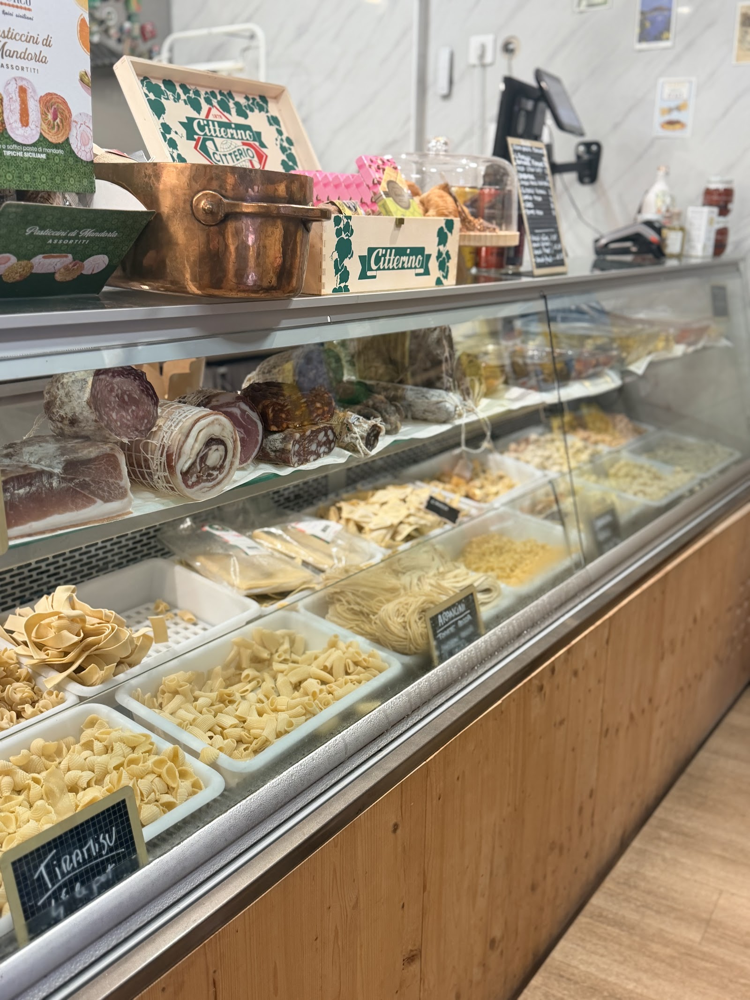
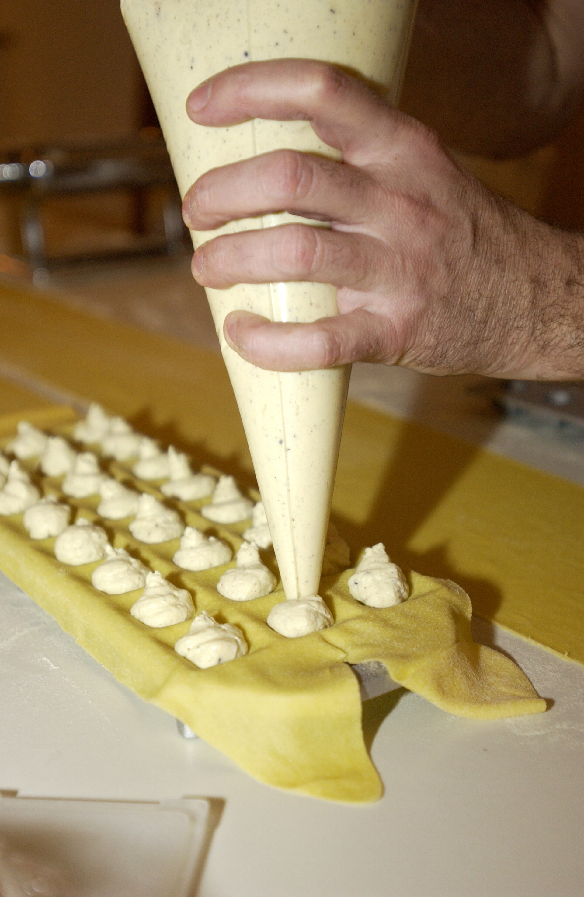
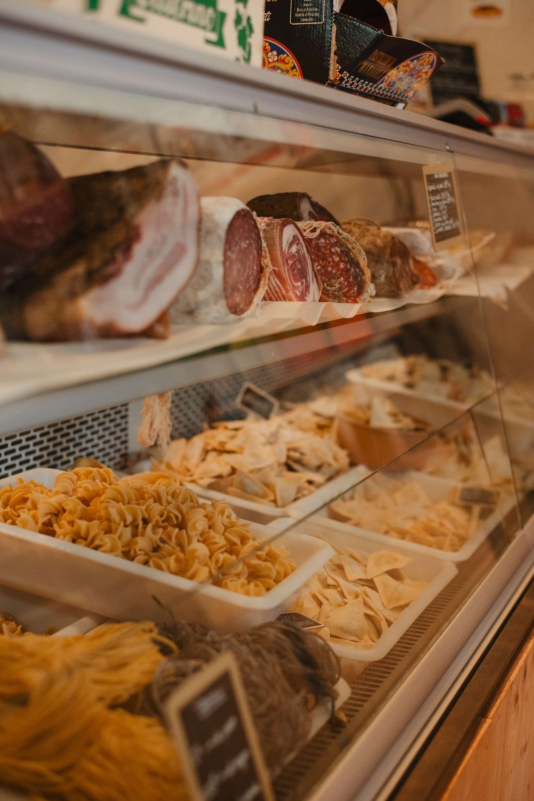
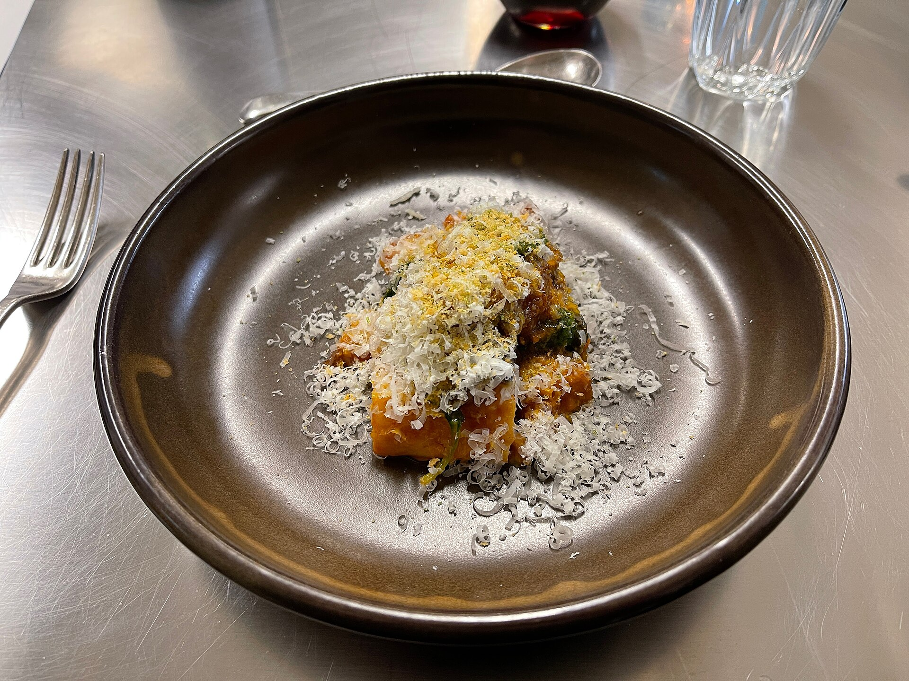
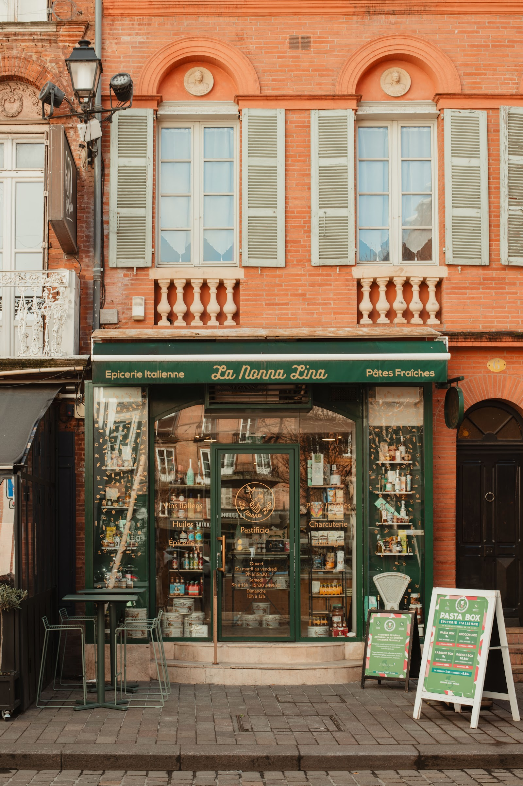

Pastificio et épicerie italienne rue Victor Hugo : pâtes fraîches, raviolis et gnocchis faits maison, et des pasta box à emporter le midi.




Un petit bout d'Italie au centre de Toulouse, où l'on vient chercher ses pâtes comme chez la nonna.
Chez La Nonna Lina, tout est fait maison et cuisiné avec amour : pâtes fraîches et originales, raviolis, gnocchis, lasagnes, et une épicerie fine pleine de produits italiens choisis avec soin.
Box servies du mardi au vendredi, de 12 h à 14 h.
“Incontestablement la meilleure épicerie italienne de Toulouse ! Des pâtes originales et hyper fraîches, des produits de qualité et une équipe super accueillante.”Anaëlle M. · avis Google
| Lundi | 11:00 – 14:00 · 17:30 – 19:30 |
| Mardi – Vendredi | 9:00 – 19:30 |
| Samedi | 9:00 – 13:00 · 15:30 – 19:30 |
| Dimanche | 10:00 – 13:00 |
05 34 44 61 97Nous écrireItinéraire
6 rue Victor Hugo, 31000 Toulouse
Démo préparée pour La Nonna Lina par Uimad Studio. Ce n'est pas le site officiel.